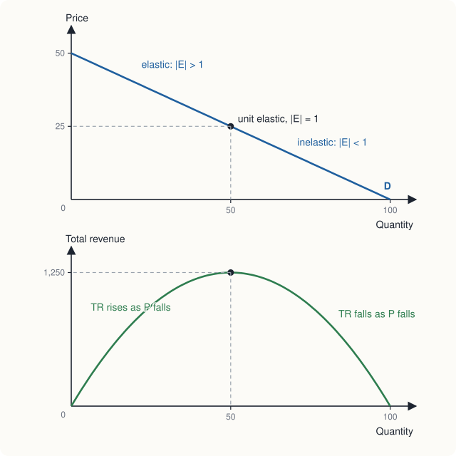

Chapter 3: Elasticity¶
How strongly buyers and sellers respond to prices and incomes
Learning outcomes
After studying this chapter you should be able to:
- Define the price elasticity of demand and calculate it by the midpoint method and at a point.
- Classify demand as elastic, inelastic or unit elastic, and recognise the extreme cases.
- Explain why elasticity changes along a straight-line demand curve.
- List the factors that make demand more or less elastic.
- Use elasticity to predict how a price change affects total revenue.
- Calculate and interpret income elasticity, cross-price elasticity and the price elasticity of supply.
3.1 Why responsiveness matters¶
The law of demand says that buyers take less when the price rises. It does not say how much less, and the answer matters a great deal. If a bus company raises its fares by 10 per cent, will it lose a few passengers or many? If a bad harvest reduces the supply of a crop, will the price rise a little or a lot? If the government taxes cigarettes, will smoking fall sharply, or will the tax mainly raise revenue? Each of these questions is about the responsiveness of quantity to price, and economists measure it with elasticity.
Elasticity is measured in percentage changes, not in units. This makes it independent of the units chosen: a demand for rice measured in kilograms or in quintals, and a price measured in rupees or in paise, give the same elasticity. It also lets us compare goods as different as salt and air travel.
3.2 The price elasticity of demand¶
The price elasticity of demand is the percentage change in the quantity demanded divided by the percentage change in price:
Because price and quantity demanded move in opposite directions, \(E_d\) is negative. Economists often drop the minus sign and speak of the elasticity's absolute value, written \(|E_d|\); "an elasticity of 2" means \(E_d = -2\). In this book we keep the sign in calculations and use the absolute value when comparing.
The midpoint method¶
A percentage change depends on the starting point. If a price rises from ₹20 to ₹25, that is a rise of 25 per cent; if it falls from ₹25 to ₹20, that is a fall of 20 per cent. To get the same elasticity in both directions, economists use the midpoint method, which divides each change by the average of the two values:
Example 3.1 Elasticity by the midpoint method
The demand for a good is \(Q_d = 100 - 2P\), the curve of Chapter 2. The price rises from ₹20 to ₹25. Find the price elasticity of demand.
Solution. At ₹20, \(Q = 60\); at ₹25, \(Q = 50\).
A 1 per cent rise in price, in this range, reduces the quantity demanded by about 0.82 per cent. If we had used the starting values instead, we would have got \((-10/60)/(5/20) = -0.67\) for the rise and \((10/50)/(-5/25) = -1.00\) for the fall back again: two different answers for the same stretch of the curve. The midpoint method avoids this.
Elastic and inelastic demand¶
| Value of \(\lvert E_d \rvert\) | Name | Meaning |
|---|---|---|
| greater than 1 | elastic | quantity changes by a larger percentage than price |
| equal to 1 | unit elastic | quantity changes by the same percentage as price |
| less than 1 | inelastic | quantity changes by a smaller percentage than price |
| 0 | perfectly inelastic | quantity does not change at all; the demand curve is vertical |
| infinite | perfectly elastic | any rise in price above a certain level reduces quantity to zero; the demand curve is horizontal |
Table 3.1. Classes of price elasticity of demand.
The two extremes are limiting cases, useful in theory. A perfectly inelastic demand would describe a patient who needs a fixed dose of a life-saving medicine and will pay almost anything for it. A perfectly elastic demand is what a single wheat farmer faces in a large market: she can sell all she wants at the market price, but nothing at all if she asks even slightly more, because buyers will simply go to another farmer. Chapter 8 builds on this case.
3.3 Elasticity along a straight-line demand curve¶
It is tempting to think that a steep demand curve is inelastic and a flat one elastic. That is roughly right when comparing two curves through the same point, but it is misleading in general, because elasticity is not the same as slope. Along a straight-line demand curve the slope is constant, but the elasticity changes from point to point.
The point elasticity at a particular price measures the response to a very small change there:
For a straight line \(Q_d = a - bP\), the first factor is always \(-b\), so \(E_d = -bP/Q\). For our demand, \(b = 2\) and \(E_d = -2P/Q\). Table 3.2 shows the result.
| Price (₹) | Quantity | Point elasticity \(-2P/Q\) | Class | Total revenue \(P \times Q\) (₹) |
|---|---|---|---|---|
| 45 | 10 | −9.00 | elastic | 450 |
| 40 | 20 | −4.00 | elastic | 800 |
| 35 | 30 | −2.33 | elastic | 1,050 |
| 30 | 40 | −1.50 | elastic | 1,200 |
| 25 | 50 | −1.00 | unit elastic | 1,250 |
| 20 | 60 | −0.67 | inelastic | 1,200 |
| 15 | 70 | −0.43 | inelastic | 1,050 |
| 10 | 80 | −0.25 | inelastic | 800 |
| 5 | 90 | −0.11 | inelastic | 450 |
Table 3.2. Elasticity and total revenue along the demand curve \(Q_d = 100 - 2P\).
The pattern is general. Near the top of a straight-line demand curve the price is high and the quantity small, so a given change in quantity is a large percentage change while a given change in price is a small one: demand is elastic. Near the bottom it is the other way round: demand is inelastic. Exactly half-way down, at the midpoint of the line, the elasticity is −1.

Note for readers who know calculus
The point elasticity is \(E_d = \dfrac{dQ}{dP}\cdot\dfrac{P}{Q}\). For \(Q = 100 - 2P\), \(dQ/dP = -2\), which gives the formula used in the table. For a curve of the form \(Q = kP^{-e}\), the elasticity is \(-e\) at every point: such a curve has constant elasticity.
3.4 What makes demand elastic or inelastic¶
Why is the demand for salt inelastic and the demand for a particular brand of biscuits elastic? Five factors matter.
- Availability of close substitutes. This is the most important. The more easily buyers can switch to something else, the more elastic the demand. Salt has no close substitute; one brand of biscuits has many.
- Necessities and luxuries. Goods that people regard as necessities (basic food, essential medicines, electricity for lighting) tend to have inelastic demand. Goods that can be postponed or done without (foreign holidays, jewellery) tend to have elastic demand. What counts as a necessity varies between people and over time.
- Share of the budget. A good that takes a tiny share of income, such as matches or salt, has inelastic demand: even doubling its price makes little difference to the buyer. A good that takes a large share, such as a car or rent, tends to have more elastic demand.
- Time. Demand is usually more elastic in the long run than in the short run. When the price of petrol rises, people can at first do little except drive a bit less. Over several years they can buy more fuel-efficient vehicles, move closer to work, or switch to public transport.
- How the market is defined. The demand for "food" is very inelastic; the demand for "vegetables" less so; the demand for "tomatoes" more elastic still; and the demand for "tomatoes from one particular seller" very elastic. The more narrowly a good is defined, the more substitutes it has.
3.5 Elasticity and total revenue¶
The total revenue of sellers (equal to the total expenditure of buyers) is price times quantity:
When the price falls, two things happen to revenue. Each unit sells for less, which reduces revenue; but more units are sold, which increases it. Which effect wins depends on the elasticity.
- If demand is elastic, the percentage rise in quantity is larger than the percentage fall in price, so a price cut raises revenue and a price rise reduces it.
- If demand is inelastic, the percentage rise in quantity is smaller than the percentage fall in price, so a price cut reduces revenue and a price rise increases it.
- If demand is unit elastic, revenue does not change.
Table 3.2 and Figure 3.1 confirm this. Cutting the price from ₹40 to ₹30 (elastic range) raises revenue from ₹800 to ₹1,200. Cutting it from ₹20 to ₹10 (inelastic range) reduces revenue from ₹1,200 to ₹800. Revenue is greatest, at ₹1,250, at the unit-elastic midpoint.
Key idea
Elastic demand: price and revenue move in opposite directions. Inelastic demand: price and revenue move in the same direction. A seller who faces inelastic demand can raise revenue by raising the price; one who faces elastic demand cannot.
Example 3.2 The paradox of a good harvest
The demand for a staple crop is inelastic. In an ordinary year, 100 lakh quintals are sold at ₹2,000 per quintal. In a year with an excellent harvest, 110 lakh quintals come to market and the price falls to ₹1,500. What happens to farmers' total revenue? What is the elasticity of demand over this range?
Solution. Ordinary year: \(2{,}000 \times 100 = 2{,}00{,}000\) lakh rupees. Good year: \(1{,}500 \times 110 = 1{,}65{,}000\) lakh rupees. Revenue falls by 17.5 per cent even though farmers produced more.
By the midpoint method:
Demand is inelastic, so the large fall in price outweighs the small rise in quantity. This is why a bumper crop can leave farmers worse off as a group, and why governments in many countries, India among them, have used support prices, procurement and storage to steady farm incomes. (Each individual farmer, of course, is better off with a bigger crop than with a smaller one at the same market price; the paradox is about all farmers together.)
The same reasoning explains why a cartel of producers of an inelastic good, such as crude oil in the short run, can raise its revenue by cutting output, and why a tax on a good with inelastic demand raises a lot of revenue without reducing consumption much.
3.6 Income and cross-price elasticities¶
Elasticity can measure the response of demand to any variable. Two others are widely used.
Income elasticity of demand¶
| Value of \(E_Y\) | Type of good | Example |
|---|---|---|
| negative | inferior | coarse grains or the cheapest form of travel, for many households |
| between 0 and 1 | normal necessity | basic food, electricity |
| greater than 1 | normal luxury | restaurant meals, air travel, jewellery |
Table 3.3. Income elasticity and types of goods.
Income elasticities matter for firms and governments planning ahead. As incomes grow, spending shifts towards goods with high income elasticity. A well-documented regularity, known as Engel's law, is that the share of income spent on food falls as income rises, because food as a whole has an income elasticity below 1.
Example 3.3 Calculating income elasticity
A household's monthly income rises from ₹40,000 to ₹44,000. Its purchases change as follows: restaurant meals from 4 to 5 a month; rice from 20 kg to 21 kg; a coarse grain from 10 kg to 9 kg. Find the income elasticity for each, by the midpoint method.
Solution. The percentage change in income is \(4{,}000 / 42{,}000 = 9.52\%\).
- Restaurant meals: \(1/4.5 = 22.22\%\), so \(E_Y = 22.22/9.52 = 2.33\): a luxury.
- Rice: \(1/20.5 = 4.88\%\), so \(E_Y = 4.88/9.52 = 0.51\): a necessity.
- Coarse grain: \(-1/9.5 = -10.53\%\), so \(E_Y = -10.53/9.52 = -1.11\): an inferior good for this household.
Cross-price elasticity of demand¶
- If \(E_{XY} > 0\), X and Y are substitutes: a rise in the price of Y increases the demand for X.
- If \(E_{XY} < 0\), they are complements: a rise in the price of Y reduces the demand for X.
- If \(E_{XY}\) is close to 0, the goods are unrelated.
For example, if the price of coffee rises from ₹100 to ₹120 per packet and a household's purchases of tea rise from 50 to 55 packets a year, the cross-price elasticity is \((5/52.5)/(20/110) = 9.52\%/18.18\% = +0.52\): tea and coffee are substitutes. Competition authorities use cross-price elasticities to decide which products compete in the same market.
3.7 The price elasticity of supply¶
The price elasticity of supply measures how strongly the quantity supplied responds to price:
It is positive, because the supply curve slopes upwards. Supply is elastic if \(E_s > 1\) and inelastic if \(E_s < 1\). A vertical supply curve (\(E_s = 0\)) describes a good whose quantity cannot change, such as the number of seats in a stadium on match day or the paintings of an artist who has died. A horizontal supply curve (infinite elasticity) describes a good that sellers will supply in any amount at a given price.
For the supply curve of Chapter 2, \(Q_s = -20 + 4P\), a rise in price from ₹20 to ₹25 raises quantity supplied from 60 to 80. By the midpoint method, \(E_s = (20/70)/(5/22.5) = 28.57\%/22.22\% = 1.29\): supply is elastic over this range.
What determines the elasticity of supply¶
- Time. This is the most important factor. In the very short run, the quantity of fresh fish on sale in the market this morning is fixed: supply is perfectly inelastic. In the short run, firms can vary output by using their existing plant more intensively. In the long run, they can build new plants and new firms can enter, so supply is much more elastic.
- Spare capacity. A firm with idle machines and workers can raise output quickly and cheaply; one working at full capacity cannot.
- Ease of storage. Goods that can be stored (grain, cement, garments) can be released from stocks when the price rises, so their supply is more elastic than that of perishable goods.
- Mobility of inputs. If workers and machines can easily be moved into the industry from elsewhere, supply is more elastic.
Caution
Do not confuse the elasticity of a curve with its slope, and do not judge elasticity from a diagram whose axes have no numbers. Changing the scale of an axis makes the same curve look steeper or flatter without changing its elasticity at any point.
3.8 Elasticity in a program¶
The calculations of this chapter are easy to automate. The program below computes midpoint elasticities and the point elasticities of Table 3.2.
def midpoint_elasticity(q1, q2, x1, x2):
"""Percentage change in q over percentage change in x, by the midpoint method."""
pct_q = (q2 - q1) / ((q1 + q2) / 2)
pct_x = (x2 - x1) / ((x1 + x2) / 2)
return pct_q / pct_x
print(round(midpoint_elasticity(60, 50, 20, 25), 2)) # Example 3.1
print(round(midpoint_elasticity(100, 110, 2000, 1500), 2)) # Example 3.2
print(round(midpoint_elasticity(4, 5, 40000, 44000), 2)) # restaurant meals
for p in range(45, 0, -10):
q = 100 - 2 * p
print(p, q, round(-2 * p / q, 2), p * q)
-0.82
-0.33
2.33
45 10 -9.0 450
35 30 -2.33 1050
25 50 -1.0 1250
15 70 -0.43 1050
5 90 -0.11 450
3.9 Summary¶
- Elasticity measures responsiveness in percentage terms, so it does not depend on units.
- The price elasticity of demand is the percentage change in quantity demanded divided by the percentage change in price. Use the midpoint method for changes between two points, and \(E_d = (\Delta Q/\Delta P)(P/Q)\) at a point.
- Demand is elastic if \(|E_d| > 1\), inelastic if \(|E_d| < 1\) and unit elastic if \(|E_d| = 1\).
- Along a straight-line demand curve, elasticity falls from very elastic at the top to very inelastic at the bottom; it is −1 at the midpoint. Elasticity is not slope.
- Demand is more elastic when there are close substitutes, when the good is a luxury, when it takes a large share of the budget, over a longer time, and when the market is narrowly defined.
- With elastic demand, price and total revenue move in opposite directions; with inelastic demand, in the same direction. Revenue is greatest where demand is unit elastic.
- Income elasticity separates inferior goods (negative), necessities (0 to 1) and luxuries (above 1). Cross-price elasticity is positive for substitutes and negative for complements.
- The price elasticity of supply is greater in the long run, with spare capacity, when goods can be stored and when inputs are mobile.
3.10 Exercises¶
Exercise 1
When the price of a concert ticket rises from ₹400 to ₹600, the number sold falls from 1,100 to 900. Calculate the price elasticity of demand by the midpoint method. Is demand elastic or inelastic? What happens to the organisers' revenue?
Answer
\(\%\Delta Q = -200/1{,}000 = -20\%\); \(\%\Delta P = 200/500 = 40\%\). \(E_d = -20/40 =\) −0.5: inelastic. Revenue rises from \(400 \times 1{,}100 = 4{,}40{,}000\) to \(600 \times 900 = 5{,}40{,}000\) rupees, as expected with inelastic demand.
Exercise 2
The demand for a good is \(Q_d = 200 - 4P\). Find the point elasticity at \(P = 10\), \(P = 25\) and \(P = 40\). At what price is total revenue greatest?
Answer
\(E_d = -4P/Q\). At \(P = 10\): \(Q = 160\), \(E_d = -40/160 = -0.25\). At \(P = 25\): \(Q = 100\), \(E_d = -100/100 = -1\). At \(P = 40\): \(Q = 40\), \(E_d = -160/40 = -4\). Revenue is greatest where demand is unit elastic, at ₹25 (revenue \(25 \times 100 = 2{,}500\) rupees).
Exercise 3
A city bus company is losing money and proposes to raise fares to increase its revenue. Under what condition will this work? Would you expect the condition to hold more in the short run or the long run?
Answer
Revenue rises with a fare increase only if demand is inelastic (\(|E_d| < 1\)). Demand is likely to be more inelastic in the short run: over time passengers can buy two-wheelers, share rides, change jobs or move, so demand becomes more elastic and the fare rise may then reduce revenue.
Exercise 4
When a family's income rises by 10 per cent, its purchases of good A rise by 15 per cent, of good B by 4 per cent, and of good C fall by 3 per cent. Classify each good.
Answer
A: \(E_Y = 1.5\), a luxury. B: \(E_Y = 0.4\), a necessity. C: \(E_Y = -0.3\), an inferior good.
Exercise 5
The price of printers falls by 10 per cent and the quantity of ink cartridges sold rises by 6 per cent. Calculate the cross-price elasticity and say what it shows.
Answer
\(E_{XY} = +6/(-10) =\) −0.6. It is negative, so printers and cartridges are complements.
Exercise 6
Explain why the supply of fresh flowers on the morning of a festival is inelastic, while the supply of plastic buckets is elastic.
Answer
Fresh flowers are perishable and take time to grow: on the morning itself the quantity available is almost fixed, so a higher price brings little extra supply. Plastic buckets can be stored and produced quickly with spare capacity, so producers can respond to a higher price by releasing stocks and running machines longer.
Exercise 7
"The demand curve for petrol is steep, so the demand for petrol is inelastic at every price." Comment.
Answer
The statement confuses slope with elasticity. Elasticity depends on the ratio \(P/Q\) as well as the slope, so it changes along a straight-line curve, and its appearance depends on the scale of the axes. Petrol demand is in fact found to be fairly inelastic in the short run, but that is an empirical finding, not something one can read from the steepness of a drawing.
3.11 Quiz¶
Check your understanding of Chapter 3
Exercise 1
If a 10 per cent rise in price reduces the quantity demanded by 20 per cent, demand is
- inelastic
- unit elastic
- elastic
- perfectly inelastic
Answer
elastic
Exercise 2
Price falls from ₹12 to ₹8 and quantity demanded rises from 40 to 60. What is the absolute value of the price elasticity by the midpoint method?
Answer
1 / 1.0 / -1 / −1
%ΔQ = 20/50 = 40%; %ΔP = −4/10 = −40%; the ratio is −1.
Exercise 3
A seller facing inelastic demand raises the price. Total revenue
- rises
- falls
- stays the same
- cannot change
Answer
rises
Exercise 4
On a straight-line demand curve, demand is unit elastic
- at the top
- at the bottom
- at the midpoint
- everywhere, since the slope is constant
Answer
at the midpoint
Exercise 5
The income elasticity of demand for a good is −0.4. The good is
- a luxury
- a necessity
- inferior
- a complement
Answer
inferior
Exercise 6
Which good is likely to have the most elastic demand?
- salt
- a particular brand of toothpaste
- toothpaste in general
- electricity
Answer
a particular brand of toothpaste
Exercise 7
The price elasticity of supply is usually
- larger in the long run than in the short run
- larger in the short run than in the long run
- the same at all times
- always negative
Answer
larger in the long run than in the short run